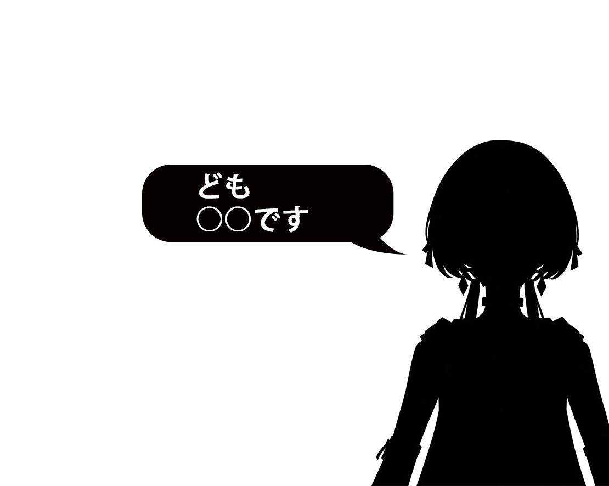

跟上每個精彩瞬間
用 AI 即時翻譯直播內容，
讓笑點與感動，都不用等。
 油字幕V-TRANSLATE
油字幕V-TRANSLATE油字幕 — 本地 AI 即時翻譯
一起笑、一起感動，不再慢半拍。
讓 AI 幫你跨過語言的距離，專心享受每一場直播。

大家好，我是○○
本地即時翻譯少一點猜測，多一點投入。
把注意力留給你喜歡的人。
用 AI 即時翻譯直播內容，
讓笑點與感動，都不用等。
以本地 AI 進行翻譯，
用自己的裝置，連結更大的世界。
軟件完全免費使用。
但也歡迎Donate 支持更新維護~
讓字幕跟著直播走。
看看油字幕如何陪你跟上每一句。
V-Translate — Local AI Real Time Translator for Vtuber viewers
Windows 10／11 64 位元 · v0.4.4 · 解壓後開啟 V-Translate.exe